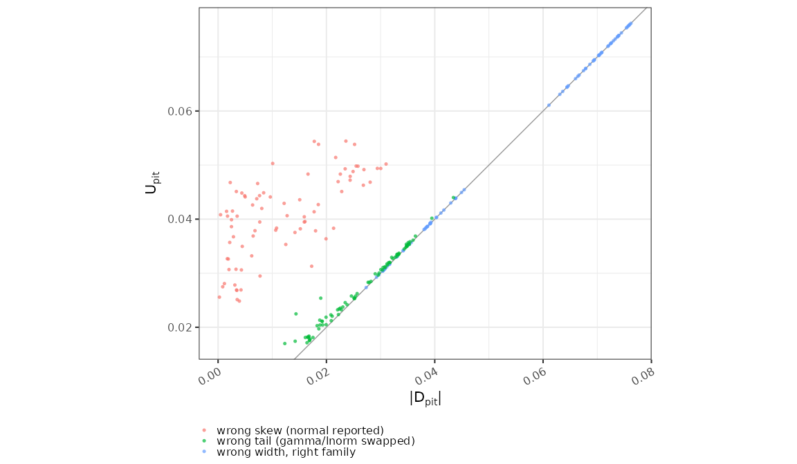

Model misspecification: what the metrics do when the predictive family is wrong
model-misspecification.Rmd
# library(pitw)
devtools::load_all()
#> ℹ Loading pitw
library(tidyverse)
#> ── Attaching core tidyverse packages ──────────────────────── tidyverse 2.0.0 ──
#> ✔ dplyr 1.2.1 ✔ readr 2.2.0
#> ✔ forcats 1.0.1 ✔ stringr 1.6.0
#> ✔ ggplot2 4.0.4 ✔ tibble 3.3.1
#> ✔ lubridate 1.9.5 ✔ tidyr 1.3.2
#> ✔ purrr 1.2.2
#> ── Conflicts ────────────────────────────────────────── tidyverse_conflicts() ──
#> ✖ readr::edition_get() masks testthat::edition_get()
#> ✖ dplyr::filter() masks stats::filter()
#> ✖ dplyr::lag() masks stats::lag()
#> ✖ readr::local_edition() masks testthat::local_edition()
#> ℹ Use the conflicted package (<http://conflicted.r-lib.org/>) to force all conflicts to become errors
.gg_pedantic(size = 0.5)
#> Warning: The requested font(s): [Roboto], are not present on the system. Alternatives will be used.
#> This warning is displayed once per session.
set.seed(1001)We fixed the median and coefficient of variation of the predictive distributions and varied the distributional family. This lets us examine how the scores respond when a forecast uses a different shape from the one that generated the observations. For example, a normal forecast for a positive, skewed rate can have the same median and coefficient of variation as a lognormal forecast.
We also compare these scores with those from changing the reported width within one family. Finally, we examine how the scores change when we apply a common location bias to forecasts with skewed errors.
1. Matching the median and coefficient of variation
The norm4, lnorm4 and gamma4
families are parametrised by a median and a coefficient of variation
\(\kappa\). We use those two parameters
to match forecasts across families.
The construction uses the fact that lnorm4 and
gamma4 are scale families. Draw a multiplicative error
\(w_i \sim \mathcal{T}(\text{median}=1,
\kappa)\) from the generating family \(\mathcal{T}\), and place the forecast
median at \(\ell_i=x/w_i\), with the
reference fixed at \(x=1\). If \(F_W\) is the CDF of the generating error,
the PIT under the matching forecast family is \(F_W(x/\ell_i)=F_W(w_i)\), which is uniform
across independent draws. Reporting another family at the same median
and coefficient of variation lets us measure the change in these
PITs.
# One estimator: n predictions of a true value of 1, errors from `truth`,
# predictive distribution reported as `report`.
misspecified <- function(truth, report, kappa, kappa_reported = kappa,
bias = 1, n = 2000) {
w <- rlang::as_function(sprintf("r%s", truth))(n, 1, kappa)
pit_w(rep(1, n), bias / w, kappa_reported, dist = report, link = "log")
}We check that each family’s quantile function and cumulative distribution function invert one another at the tested probabilities.
map_dfr(c("gamma4", "lnorm4", "norm4"), function(f) {
q <- rlang::as_function(sprintf("q%s", f))(0.9, 2, 0.5)
tibble(family = f, q90 = q,
recovered_p = rlang::as_function(sprintf("p%s", f))(q, 2, 0.5))
})
#> # A tibble: 3 × 3
#> family q90 recovered_p
#> <chr> <dbl> <dbl>
#> 1 gamma4 3.64 0.9
#> 2 lnorm4 3.66 0.9
#> 3 norm4 3.28 0.9When the forecast uses the generating family, the reference mean for \(B_{pit}\) at \(n = 2000\) is about 0.007. We compare this value with the simulated scores.
map_dfr(c(0.3, 0.6, 1.0), function(k) {
misspecified("gamma4", "gamma4", k) |> mutate(kappa = k)
}) |>
transmute(kappa, B_pit, U_pit, D_pit)
#> # A tibble: 3 × 4
#> kappa B_pit U_pit D_pit
#> <dbl> <dbl> <dbl> <dbl>
#> 1 0.3 0.00482 0.00450 -0.00326
#> 2 0.6 0.00470 0.00490 -0.00424
#> 3 1 0.00616 0.0116 -0.002472. Scores by predictive family
We vary \(\kappa\) from 0.01 to 0.8. At the lower end the three families have similar shapes. We use two generating families and three reported families, with 20 replicate estimators for each combination.
grid <- crossing(
truth = c("gamma4", "lnorm4"),
report = c("gamma4", "lnorm4", "norm4"),
kappa = c(0.01, 0.1, 0.2, 0.4, 0.6, 0.8),
rep = 1:20
)
sweep <- grid |>
mutate(score = pmap(list(truth, report, kappa),
~ misspecified(..1, ..2, ..3))) |>
unnest(score) |>
mutate(match = if_else(truth == report, "correct family", "misspecified"))
summ <- sweep |>
group_by(truth, report, kappa, match) |>
summarise(across(c(B_pit, U_pit, D_pit), median), .groups = "drop")
crit <- tibble(
metric = c("B_pit", "U_pit", "D_pit"),
critical = c(b_pit_significance(NA, 2000)$critical_0.05,
u_pit_significance(NA, 2000)$critical_0.05,
d_pit_significance(NA, 2000)$critical_0.05)
)
summ |>
pivot_longer(c(B_pit, U_pit, D_pit), names_to = "metric") |>
mutate(metric = factor(metric, c("B_pit", "U_pit", "D_pit"))) |>
ggplot(aes(kappa, value, colour = report, linetype = match)) +
geom_hline(yintercept = 0, colour = "grey70") +
geom_hline(data = crit, aes(yintercept = critical),
linetype = "dashed", colour = "grey40") +
geom_hline(data = filter(crit, metric == "D_pit"),
aes(yintercept = -critical),
linetype = "dashed", colour = "grey40") +
geom_line() +
geom_point(size = 0.8) +
facet_grid(metric ~ truth, scales = "free_y",
labeller = labeller(truth = ~ paste("true family:", .x))) +
labs(x = expression(paste("coefficient of variation ", kappa)),
y = NULL, colour = "reported as", linetype = NULL)
The scores for mismatched families began to cross the reference thresholds around \(\kappa = 0.4\) in these simulations. At \(\kappa = 0.2\), the scores shown remained within the thresholds.
For example, at \(\kappa=0.8\) a lognormal forecast for gamma errors gave a median directed score of about \(+0.033\), indicating net overconfidence. Exchanging the two families gave about \(-0.033\), indicating net underconfidence. When we reported a normal forecast, the unsigned distance exceeded the absolute directed score for both generating families. Some of the departure therefore cancelled in the directed score.
3. Comparing changes in shape and width
We compare \(U_{pit}/|D_{pit}|\) for mismatched families with the same ratio for forecasts whose reported width differs within the generating family.
width_error <- crossing(kappa_reported = c(0.4, 0.5, 0.75, 0.9), rep = 1:20) |>
mutate(score = map(kappa_reported, ~ misspecified("gamma4", "gamma4", 0.6, .x))) |>
unnest(score) |>
transmute(scenario = "wrong width, right family", U_pit, D_pit)
shape_error <- sweep |>
filter(match == "misspecified", kappa >= 0.6) |>
transmute(scenario = if_else(report == "norm4",
"wrong skew (normal reported)",
"wrong tail (gamma/lnorm swapped)"),
U_pit, D_pit)
bind_rows(width_error, shape_error) |>
group_by(scenario) |>
summarise(median_U = median(U_pit),
median_abs_D = median(abs(D_pit)),
ratio = median(U_pit / abs(D_pit)))
#> # A tibble: 3 × 4
#> scenario median_U median_abs_D ratio
#> <chr> <dbl> <dbl> <dbl>
#> 1 wrong skew (normal reported) 0.0411 0.00903 4.78
#> 2 wrong tail (gamma/lnorm swapped) 0.0273 0.0267 1.02
#> 3 wrong width, right family 0.0533 0.0533 1.00
bind_rows(width_error, shape_error) |>
ggplot(aes(abs(D_pit), U_pit, colour = scenario)) +
geom_abline(slope = 1, intercept = 0, colour = "grey60") +
geom_point(size = 0.9, alpha = 0.7) +
coord_equal() +
labs(x = expression(paste("|", D[pit], "|")), y = expression(U[pit]),
colour = NULL) +
theme(legend.position = "bottom", legend.direction = "vertical")
In the width experiment, the points lie close to the diagonal \(U_{pit}=|D_{pit}|\). Most PIT departures contributed in the same direction. Exchanging gamma and lognormal distributions at matched median and coefficient of variation produced a similar pattern. These scores alone give little basis for choosing between the two explanations.
Reporting a normal distribution for the positive, skewed observations gave larger \(U_{pit}\) relative to \(|D_{pit}|\). Opposing contributions cancelled in the signed score. The same pattern could arise from errors that differ between subgroups.
4. Bias adjustment with skewed errors
The adjustment uses the median to estimate a common shift on the link scale. With a log link, multiplying each forecast by \(b\) applies a common location shift. We vary \(b\) to see how the scores respond when the errors are skewed.
bias_sweep <- crossing(
report = c("gamma4", "lnorm4", "norm4"),
bias = c(1, 1.25, 1.6, 2),
rep = 1:20
) |>
mutate(score = pmap(list(report, bias),
~ misspecified("gamma4", ..1, 0.6, bias = ..2))) |>
unnest(score)
bias_sweep |>
group_by(report, bias) |>
summarise(across(c(B_pit, U_pit, D_pit), median), .groups = "drop") |>
pivot_wider(names_from = bias, values_from = c(B_pit, U_pit, D_pit))
#> # A tibble: 3 × 13
#> report B_pit_1 B_pit_1.25 B_pit_1.6 B_pit_2 U_pit_1 U_pit_1.25 U_pit_1.6
#> <chr> <dbl> <dbl> <dbl> <dbl> <dbl> <dbl> <dbl>
#> 1 gamma4 0.00632 0.102 0.202 0.282 0.00461 0.00439 0.00486
#> 2 lnorm4 0.0212 0.120 0.226 0.314 0.0208 0.0215 0.0205
#> 3 norm4 0.0301 0.0837 0.176 0.248 0.0300 0.0305 0.0297
#> # ℹ 5 more variables: U_pit_2 <dbl>, D_pit_1 <dbl>, D_pit_1.25 <dbl>,
#> # D_pit_1.6 <dbl>, D_pit_2 <dbl>
bias_sweep |>
pivot_longer(c(B_pit, U_pit, D_pit), names_to = "metric") |>
mutate(metric = factor(metric, c("B_pit", "U_pit", "D_pit"))) |>
ggplot(aes(factor(bias), value, colour = report, fill = report)) +
geom_hline(yintercept = 0, colour = "grey70") +
geom_boxplot(outliers = FALSE, alpha = 0.2) +
facet_wrap(~ metric, scales = "free_y") +
labs(x = "multiplicative bias", y = NULL, colour = NULL, fill = NULL)
As the multiplicative bias increased, so did the baseline distance in these simulations. At a fixed set of draws, multiplying every forecast by the same factor adds a constant to the fitted log shift. The adjusted PITs are then unchanged. The plotted groups use fresh draws at each bias level and show the sampling variation around this result.
5. Scope of the comparison
The reported and generating distributions shared a median and coefficient of variation in the family comparisons. At the higher coefficients of variation, reporting a normal forecast also put appreciable probability below zero. The observed discrepancy can therefore include a difference in support as well as skew or tail weight. The horizontal reference lines use the independent uniform PIT model for \(B_{pit}\) and the fitted common-scale Gaussian approximation for the two adjusted scores.